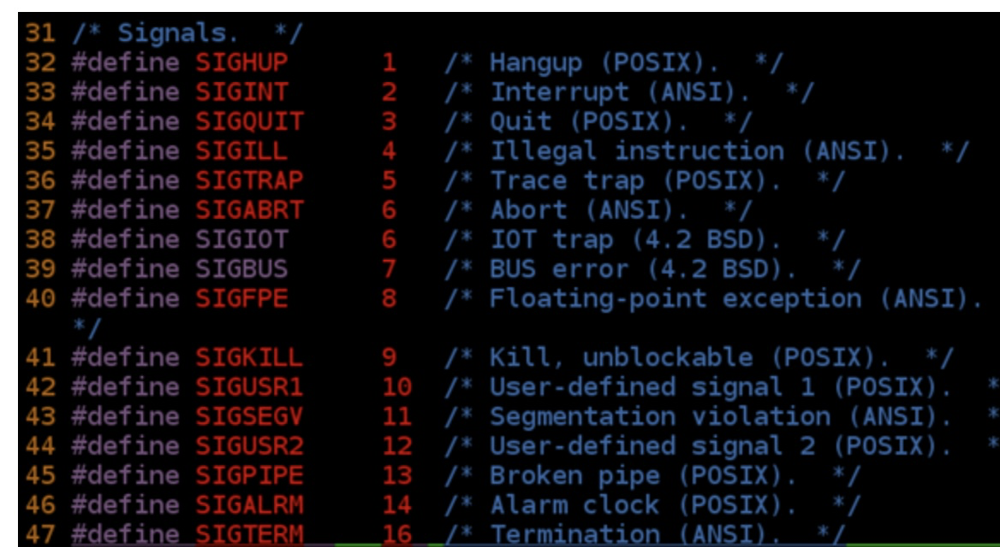
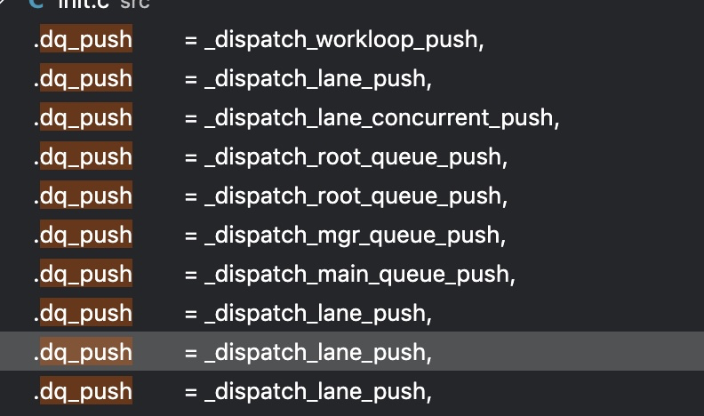
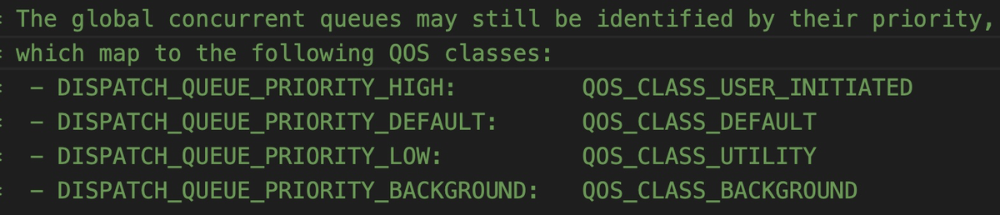
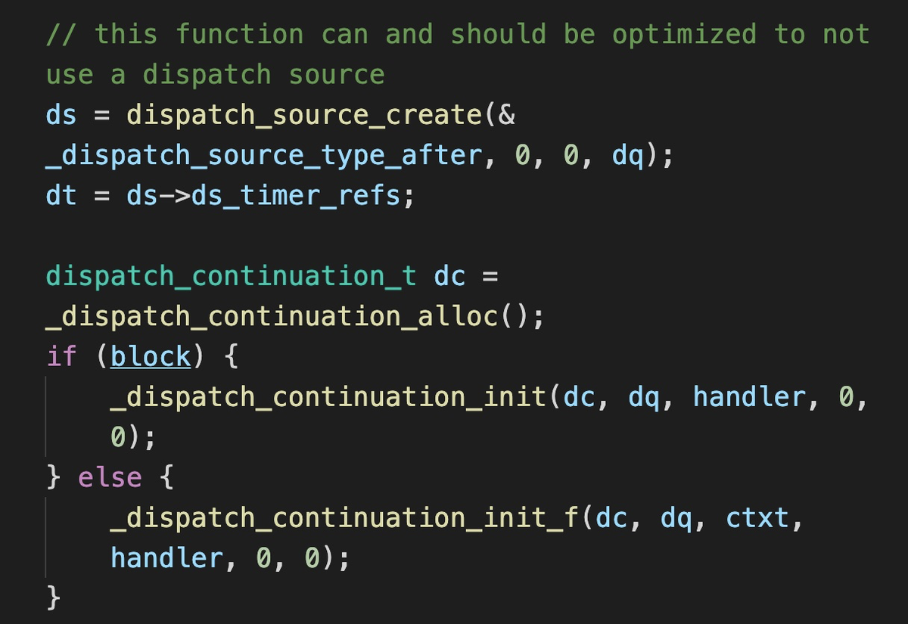
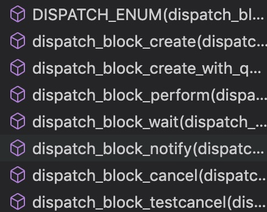
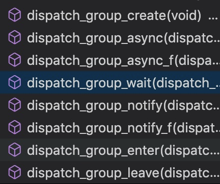
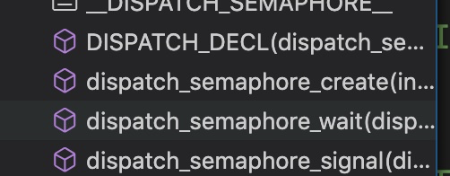
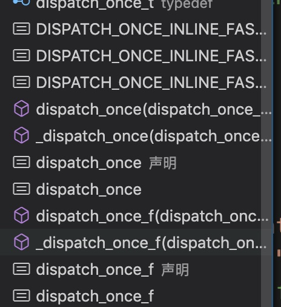

目标：
学习10+多线程下的正确使用case
阅读GCD白皮书，粗略阅读GCD源码，深入理解API背后的impl，掌握所有的API的正确使用姿势
第一篇博客：并发编程：API与挑战
博客主要讲两个主题：
iOS和macOS下的并发API介绍
与API无关的并发编程面临的挑战
iOS和macOS下的多线程API
- Pthread
- pthread是通用的多线程API，支持在Unix/Linux/Windows下使用
- 使用C语言编写
- 需要手动管理thread的生命周期
pthread_create()
pthread_detach()//从当前线程detach，运行结束自动释放所有资源
pthread_exit()//终止
pthread_cancel()//中断
pthread_join()//block当前线程，wait指定线程结束
pthread_attr_init()//线程属性初始化
pthread_kill()//不是kill线程，而是发送信号
常见的pthread signal：

- NSThread
先对比使用pthread和NSThread的区别，在下面的例子里，我们先后使用Pthread和NSThread完成寻找数组中最大最小值的任务：
#import <pthread.h>
struct threadInfo {
uint32_t * inputValues;
size_t count;
};
struct threadResult {
uint32_t min;
uint32_t max;
};
void * findMinAndMax(void *arg)
{
struct threadInfo const * const info = (struct threadInfo *) arg;
uint32_t min = UINT32_MAX;
uint32_t max = 0;
for (size_t i = 0; i < info->count; ++i) {
uint32_t v = info->inputValues[i];
min = MIN(min, v);
max = MAX(max, v);
}
free(arg);
struct threadResult * const result = (struct threadResult *)
malloc(sizeof(*result));
result->min = min;
result->max = max;
return result;
}
int main(int argc, const char * argv[])
{
size_t const count = 1000000;
uint32_t inputValues[count];
// Fill input values with random numbers:
for (size_t i = 0; i < count; ++i) {
inputValues[i] = arc4random();
}
// Spawn 4 threads to find the minimum and maximum:
size_t const threadCount = 4;
pthread_t tid[threadCount];
for (size_t i = 0; i < threadCount; ++i) {
struct threadInfo * const info = (struct threadInfo *)
malloc(sizeof(*info));
size_t offset = (count / threadCount) * i;
info->inputValues = inputValues + offset;
info->count = MIN(count - offset, count / threadCount);
int err = pthread_create(tid + i, NULL, &findMinAndMax,info);//使用pthread创建线程
NSCAssert(err == 0, @"pthread_create() failed: %d", err);
}
// Wait for the threads to exit:
struct threadResult * results[threadCount];
for (size_t i = 0; i < threadCount; ++i) {
int err = pthread_join(tid[i], (void **) &(results[i]));
//pthread_join会让当前线程等待第一个参数thread---id指定的线程
NSCAssert(err == 0, @"pthread_join() failed: %d", err);
}
// Find the min and max:
uint32_t min = UINT32_MAX;
uint32_t max = 0;
for (size_t i = 0; i < threadCount; ++i) {
min = MIN(min, results[i]->min);
max = MAX(max, results[i]->max);
free(results[i]);
results[i] = NULL;
}
NSLog(@"min = %u", min);
NSLog(@"max = %u", max);
return 0;
}@interface FindMinMaxThread : NSThread
@property (nonatomic) NSUInteger min;
@property (nonatomic) NSUInteger max;
- (instancetype)initWithNumbers:(NSArray *)numbers;
@end
@implementation FindMinMaxThread {
NSArray *_numbers;
}
- (instancetype)initWithNumbers:(NSArray *)numbers
{
self = [super init];
if (self) {
_numbers = numbers;
}
return self;
}
- (void)main
{
NSUInteger min;
NSUInteger max;
// process the data
self.min = min;
self.max = max;
}
@end
int main() {
NSMutableSet *threads = [NSMutableSet set];
NSUInteger numberCount = self.numbers.count;
NSUInteger threadCount = 4;
for (NSUInteger i = 0; i < threadCount; i++) {
NSUInteger offset = (numberCount / threadCount) * i;
NSUInteger count = MIN(numberCount - offset, numberCount / threadCount);
NSRange range = NSMakeRange(offset, count);
NSArray *subset = [self.numbers subarrayWithRange:range];
FindMinMaxThread *thread = [[FindMinMaxThread alloc]initWithNumbers:subset];
[threads addObject:thread];
[thread start];
}
死循环，直到遍历所有thread.isFinished==YES的时候才break，略
}
我们得出的结论是无论使用pthread还是NSThread我们都无法优雅的解决多线程同步和通信的问题。
使用NSThread的一些方法比如performSelectoer:onThread:会稍微优雅一些。
使用pthread或者NSThread最直接的问题就是无法控制的线程数量，创建一个线程的开销相对较大，切换线程也有开销，如果无法全局的管理，就会带来线程爆炸的问题。由此提出了线程池的概念，threadpool，GCD就是对线程池的一种封装。
GCD
- GCD使我们不再手动做线程交互
- 使用Queue处理任务级别的概念，更加纯粹和易用
- GCD暴露了5种Queue来使用：
- Main
- 3种不同优先级的background queue
- 一种低I/O的，比上面四种更低优先级的queue
- 对于共用资源的不同线程一般不使用不同的优先级，可能会导致一些低优先级的任务阻塞了高优先级的任务。【优先级反转】
NSOperationQueue
- 基于GCD的封装，个人不喜欢使用
并发导致的问题
共享资源的问题：
-
- The key concept of OoOE processing is to allow the processor to avoid a
class of stalls that occur when the data needed to perform an operation
are unavailable.
就是说乱序执行可以在不影响逻辑的情况下更高的命中CPU缓存。 - Tomasulo算法
- The key concept of OoOE processing is to allow the processor to avoid a
Mutual Exclusion (Mutex) 互斥锁
- 防止两个线程同时访问一个资源
- 某一个时刻只有一个线程拥有这个锁
- 获取资源前先acquire mutex lock
- 使用完资源，release llock
- Mutex lock必须处理CPU指令乱序执行带来的问题 使用memory
barrier- OC大部分的原子特性来自于OSAtomic，底层使用的是std::atomic
- 注意atomic保证原子性，volidate只标记易变，不能保证原子性
- atomic保证单个操作的原子性，但是不能保证两个原子操作之间的顺序，由此引入了memorybarrier
- 一篇来自GCC的关于使用memory_order的解释
- 如果cpu乱序把内存读写放在了mutex
lock前，mutex就失效了，所以要使用memory barrier
- 如果cpu乱序把内存读写放在了mutex
Dead Lock
void swap(A, B)
{
lock(lockA);
lock(lockB);
int a = A;
int b = B;
A = b;
B = a;
unlock(lockB);
unlock(lockA);
}一段典型的死锁代码，两个线程分别调用swap(a, b)和swap(b, a)的时候就挂了
需要的共享资源越多，陷入死锁的风险就越大。
Starvation
- 多读单写问题
优先级反转
- 一种case：高优和低优的task共享一个资源，低优先级先lock了，它预期是快速释放lock，然后让高优先级的获取到lock，
第二篇博客低级并发API
灵活性带来了复杂性和各种职责。
dispatch_async
#ifdef __BLOCKS__
void
dispatch_async(dispatch_queue_t dq, dispatch_block_t work)
{
dispatch_continuation_t dc = _dispatch_continuation_alloc();
uintptr_t dc_flags = DC_FLAG_CONSUME;
dispatch_qos_t qos;
qos = _dispatch_continuation_init(dc, dq, work, 0, dc_flags);
_dispatch_continuation_async(dq, dc, qos, dc->dc_flags);
}
#endif
//可以看到这里是创建了一个dispatch_continuation_t的变量，对我们传入的block进行封装，封装结果dc->dc_func就是我们的block任务
//flag是DC_FLAG_CONSUME
//然后做QOS
//重点在_dispatch_continuation_async
DISPATCH_ALWAYS_INLINE
static inline void
_dispatch_continuation_async(dispatch_queue_class_t dqu,
dispatch_continuation_t dc, dispatch_qos_t qos, uintptr_t dc_flags)
{
#if DISPATCH_INTROSPECTION
if (!(dc_flags & DC_FLAG_NO_INTROSPECTION)) {
_dispatch_trace_item_push(dqu, dc);
}
#else
(void)dc_flags;
#endif
return dx_push(dqu._dq, dc, qos);
}
//DISPATCH_INTROSPECTION是个GCC编译环境变量
#define dx_push(x, y, z) dx_vtable(x)->dq_push(x, y, z)
#define dx_vtable(x) (&(x)->do_vtable->_os_obj_vtable)
//dx_push实际执行的就是dq_push，dq_push有很多种，见下图：
//dx_push实际执行的就是dq_push，dq_push有很多种，见下图：

无论是lane_push,
workloop_push_mgr_push最后都会转发到root_queue_push上去，所谓转发，就是把对象（y）链接到root
queue上去
dx_push->dq_push->_dispatch_root_queue_push->_dispatch_root_queue_push_inline->_dispatch_root_queue_poke->_dispatch_root_queue_poke_slow
最终在root queue上执行block的代码如下：
static inline void
_dispatch_root_queue_push_inline(dispatch_queue_global_t dq,
dispatch_object_t _head, dispatch_object_t _tail, int n)
{
struct dispatch_object_s *hd = _head._do, *tl = _tail._do;
if (unlikely(os_mpsc_push_list(os_mpsc(dq, dq_items), hd, tl, do_next))) {
//从poke函数进入----------
return _dispatch_root_queue_poke(dq, n, 0);
//----------------------
}
}
void
_dispatch_root_queue_poke(dispatch_queue_global_t dq, int n, int floor)
{
//触发poke slow-------
return _dispatch_root_queue_poke_slow(dq, n, floor);
//----------------------
}
//只有队列的首个任务能触发poke_slow
//注意这里有使用内部workqueue还是pthreadPool的区别，在pokeSlow里
static void
_dispatch_root_queue_poke_slow(dispatch_queue_global_t dq, int n, int floor)
{
int can_request, t_count;
// 获取线程池大小（即线程数量）
t_count = os_atomic_load2o(dq, dgq_thread_pool_size, ordered);
do {
// 计算可以请求的数量
//t_count > floor就是可以满足这次请求
//否则不能满足，can_request为0
can_request = t_count < floor ? 0 : t_count - floor;
if (remaining > can_request) {
//不能满足的时候，减0
//remaining设置为0
//能满足的时候，remaining设置为即将要启动的线程数量
os_atomic_sub2o(dq, dgq_pending, remaining - can_request, relaxed);
remaining = can_request;
}
if (remaining == 0) {
// 线程池满了，报错
}
} while (!os_atomic_cmpxchgvw2o(dq, dgq_thread_pool_size, t_count,
t_count - remaining, &t_count, acquire));
pthread_attr_t *attr = &pqc->dpq_thread_attr;
pthread_t tid, *pthr = &tid;
#if DISPATCH_USE_MGR_THREAD && DISPATCH_USE_PTHREAD_ROOT_QUEUES
if (unlikely(dq == &_dispatch_mgr_root_queue)) {
pthr = _dispatch_mgr_root_queue_init();
}
#endif
do {
_dispatch_retain(dq);
// 使用pthread创建线程
while ((r = pthread_create(pthr, attr, _dispatch_worker_thread, dq))) {
if (r != EAGAIN) {
(void)dispatch_assume_zero(r);
}
_dispatch_temporary_resource_shortage();
}
} while (--remaining);
#else
(void)floor;
#endif // DISPATCH_USE_PTHREAD_POOL
}
//可以看到最后还是使用pthread_workqueue进行了处理，至于pthread是如何处理的，就要深入libpthread进行查看了
disptach_once
dispatch_once 具有非常高效的检查性能，我们通常用来初始化单例和全局数据。
单例通常带来测试上的难题。
dispatch_once_t
类型的数据不能用来作为一个对象的成员，必须是一个static静态量。本质上应该是封装的pthread_once，但是更好用，更少的错误。
dispatch_after
dispatch_after目前我理解就像是时序中的goto，在前端这种异步场景非常多的情况下意味着竞争和大量的判断条件容错，尽量不要使用。
dispatch_after的block无法直接取消，取消非常麻烦，但是还是可以取消的
Queues
Concurrent or serial, default serial
GCD维持了一个thread pool，与thread pool交互的就是queue
Thread pool的好处：By maintaining a pool of threads, the model increases
performance and avoids latency in execution due to frequent creation and
destruction of threads for short-lived tasksthread是消耗内存和内核资源的，但是比起一个存在的thread消耗的静态资源，创建和销毁的消耗会更大。
如果queue提交到的thread
pool里的一个task阻塞了一个thread，这时GCD会创建一个新的thead并加入到线程池中。task阻塞thread的一种常见场景是I/O或者网络请求（也是IO的一种）
- IO场景下，比如网络请求，我们需要维持一个线程一直做阻塞的读取操作，或者不停的查询数据是否返回了。这都不是最佳姿势，kqueue提供了一种最佳姿势，当数据返回的时候抛出一个事件。GCD也是使用了这种方法（使用dispatch_source来作为event）。
_isolation = dispatch_queue_create([[self description] UTF8String], NULL);
_nativeSocket = socket(PF_INET6, SOCK_STREAM, IPPROTO_TCP);
struct sockaddr_in sin = {};
sin.sin_len = sizeof(sin);
sin.sin_family = AF_INET6;
sin.sin_port = htons(port);
sin.sin_addr.s_addr= INADDR_ANY;
int err = bind(result.nativeSocket, (struct sockaddr *) &sin, sizeof(sin));
NSCAssert(0 <= err, @"");
_eventSource = dispatch_source_create(DISPATCH_SOURCE_TYPE_READ, _nativeSocket, 0, _isolation);
dispatch_source_set_event_handler(result.eventSource, ^{
acceptConnection(_nativeSocket);
});
//使用dispatch_source来完成event的通知
//source的通知机制可以iOS渲染中runloop的解析Target Queue
手动创建一个queue的时候需要注意
可以为你的创建的queue设置一个target
queue，这样就可以创建一条转发chain，这个特性在你使用queue来隔离的时候是非常有用的：- Foo这个队列转发到Bar这个队列上，如果foo是一个隔离队列，转发到bar这个隔离队列上，那么就一定是线程安全的
如果target queue是个serial，那么本身也会被转化为serial
Priorities
- 大多数情况下，设置priority并不会像你想的那样做，实际上有非常多的问题，比如优先级反转问题。
Isolation
隔离是常见的GCD queue的使用方式，有两种变体。
保护资源
- 任何时刻只有一个线程允许操作这个资源。
单一资源，多读单写
- (void)setCount:(NSUInteger)count forKey:(NSString *)key
{
key = [key copy];
dispatch_barrier_async(self.isolationQueue, ^(){
if (count == 0) {
[self.counts removeObjectForKey:key];
} else {
self.counts[key] = @(count);
}
});
}
- (NSUInteger)countForKey:(NSString *)key;
{
__block NSUInteger count;
dispatch_sync(self.isolationQueue, ^(){
NSNumber *n = self.counts[key];
count = [n unsignedIntegerValue];
});
return count;
}isolationQueue是一个concurrent的。
When you use concurrent queues, make sure that all barrier calls are
async
使用并发队列的时候，barrier必须是async的，否则可能会死锁。
Group
group是一个我们非常常用的API，我们把所有的API都丢出来讲一下
Group主要解决的是多个异步任务ABCD我们不确定谁先返回，但是需要等待ABCD全部返回才可以继续进行某个流程。这个在RAC里可以使用ZIP或者lift_select来完成等待多个信号量的操作。而GCD在底层上，使用的是一个dispatch_group_t的结构体，里面存放了一个value，每一次enter/leave的时候我们就会对这个value进行操作，当value降为0的时候(某一次leave的时候)我们就notify。
group的所有API都在sema4.c里，因为group实质上就是一个sema4.
在老版本的dispatch里，还没有dispatch_object这样的概念，可以参考博文5.
dispatch_group_create(void);
- 内部是_dispatch_group_create_with_count(0)
- 创建一个dispatch_group_t的对象
- atomic的把-0这个value赋值到对象的flag（dg_bits）里
- 使用-0的原因是这个value每次enter的时候是sub一次，leave的时候add一次，所以create_with_count(n)的逻辑是-n
- 内部是_dispatch_group_create_with_count(0)
dispatch_group_async(dispatch_group_t group, dispatch_queue_t queue,
dispatch_block_t block);- 给一个group提交一个block，异步执行
- 创建一个dispatch_continuation_t， init
- 用_dispatch_continuation_group_async把这个新的block派发出去_
- dispatch_continuation_group_async
- dispatch_group_enter
- _dispatch_continuation_async
dispatch_group_async_f(dispatch_group_t group, dispatch_queue_t queue,
void *_Nullable context, dispatch_function_t work);- 给一个group提交一个函数，异步执行
dispatch_group_wait(dispatch_group_t group, dispatch_time_t timeout);
- 同步的等待到所有的异步block执行完毕或者time out
- 如果group没有block提交进去的话则直接返回
- 内部实现：
- os_atomic_rmw_loop2o一个rmw的循环等着，这个我们在notify里也会遇到
- 遇到结束条件的时候循环结束，进入_dispatch_group_wait_slow
dispatch_group_notify(dispatch_group_t group, dispatch_queue_t queue,
dispatch_block_t block);- 所有提交给group的block被执行完毕的时候会触发这个block
- 内部逻辑，使用了一个
dispatch_continuation_t类型的变量，它会把需要执行的block持有住。 - 根据目前的版本看，感觉陷入了一个使用rmw的循环不停的查询这个group是不是完成了，如果是，就执行_dispatch_group_wake
- _dispatch_group_wake:
执行一系列的continuation（一个链表）前，先snapshoot一下：- dc = os_mpsc_capture_snapshot(os_mpsc(dg, dg_notify), &tail);
- // Snapshot before anything is notified/woken
rdar://problem/8554546
- 使用_dispatch_continuation_async对所有的continuation的block进行处理
- 这里标红是因为想不明白为什么会写一个循环。。。循环终止的条件就是这个group的flag变了，可以notify了，感觉性能低下，还会有延迟
dispatch_group_notify_f(dispatch_group_t group, dispatch_queue_t queue,
void *_Nullable context, dispatch_function_t work);dispatch_group_enter(dispatch_group_t group);
- 按照之前说的，对dg_bits的value字段做-1操作
- 判断是否溢出到MAX，如果是，则crash
dispatch_group_leave(dispatch_group_t group);
- group的dg_bits生成两个新的变量，old_state和new_state
- 按照之前说的，对old_state的value字段做+1操作，
- 与enter单纯的-1逻辑不同，+1因为有可能到0，需要处理多种情况和线程被打断的情况
Do:
new_state=old_state
**if** ((old_state & DISPATCH_GROUP_VALUE_MASK) == 0) {
new_state &= ~DISPATCH_GROUP_HAS_WAITERS;
new_state &= ~DISPATCH_GROUP_HAS_NOTIFS;
} **else** {
*// If the group was entered again since the atomic_add above,*
*// we can't clear the waiters bit anymore as we don't know for*
*// which generation the waiters are for*
new_state &= ~DISPATCH_GROUP_HAS_NOTIFS;
}
**if** (old_state == new_state) **break**;
While new和old无change
然后_dispatch_group_wake(dg, old_state, **true**);Source
dispatch_source_t是一个非常底层的东西，下面介绍一些用途，但是iOS上使用有限，因为你并不能唤醒一个process，所以不能watch
it，并且你并不能往app bundle外读写文件，所以并不能watch file。
它实际上是BSD内核里常用的kqueue的封装
source支持的event【实际上就是kqueue支持的事情】：
Mach port send right state changes.
Mach port receive right state changes.
External process state change.
File descriptor ready for read.
File descriptor ready for write.
Filesystem node event.
POSIX signal.
Custom timer.
Custom event.
重点解释一下啥是自定义事件，简单说就是自己给自己发信号，用dispatch_source_merge_data函数。为什么叫这个奇怪的名字呢？因为GCD会在触发event对应的handler前自动合并多个事件，你可以调用多次dispatch_source_merge_data。
#define DISPATCH_SOURCE_TYPE_DATA_ADD (&_dispatch_source_type_data_add)
#define DISPATCH_SOURCE_TYPE_DATA_OR (&_dispatch_source_type_data_or)
#define DISPATCH_SOURCE_TYPE_DATA_REPLACE (&_dispatch_source_type_data_replace)
void dispatch_source_merge_data(dispatch_source_t source, uintptr_t value);
一个自定义的event有一个data属性，可以使用上述函数对一些系统行为的data进行处理，在handler回调的时候使用dispatch_source_get_data就可以获取到合并（替换）后的data了。
场景举例子：
如果一个异步线程需要更新一个进度条，因为主线程带有很多的事件发送过去，最好的办法就是把我们的数据merge进去一块发送过去。
dispatch_source_t source = dispatch_source_create(DISPATCH_SOURCE_TYPE_DATA_ADD, 0, 0, dispatch_get_main_queue());
dispatch_source_set_event_handler(source, ^{
[progressIndicator incrementBy:dispatch_source_get_data(source)];
});
dispatch_resume(source);
dispatch_apply([array count], globalQueue, ^(size_t index) {
// do some work on data at index
dispatch_source_merge_data(source, 1);
});注意：dispatch_source_t创建出来以后永远都是处于suspended状态，必须要手动resume。
但是实际上在考虑要不要使用source的时候，只要问一个问题就好了，你希望你的event被合并吗？如果不希望，就是用dispatch_async，使用dispatch_async，你的动作块一定会被触发。但是如果使用source，它会在主线程忙碌的时候合并，不论触发多少次，handler只会触发一次。
下面几个其实都是使用系统内置的事件
dispatch_queue_t globalQueue = dispatch_get_global_queue(DISPATCH_QUEUE_PRIORITY_DEFAULT, 0);
dispatch_source_t stdinSource = dispatch_source_create(DISPATCH_SOURCE_TYPE_READ,STDIN_FILENO,0,globalQueue);
dispatch_source_set_event_handler(stdinSource, ^{
char buf[1024];
int len = read(STDIN_FILENO, buf, sizeof(buf));
if(len > 0)
NSLog(@"Got data from stdin: %.*s", len, buf);
});
dispatch_resume(stdinSource);这样处理的最大的优点是我们是基于unix处理的，而不是runloop，而且如果你使用的c标准的read，你会需要处理意外情况，但是GCD处理了这些东西，只有正常的时候你的handler才会被触发。
观察进程的生命周期
如果有一个进程在运行，并且你需要知道它啥时候结束的，GCD可以做这件事情，并且你可以用它去检查这个进程什么时候进行了fork，也就是又起了一个子进程或者一个signal被发送到了这个进程里。
@import AppKit;
// ...
NSArray *array = [NSRunningApplication
runningApplicationsWithBundleIdentifier:@"com.apple.mail"];
if (array == nil || [array count] == 0) {
return;
}
pid_t const pid = [[array firstObject] processIdentifier];
self.source = dispatch_source_create(DISPATCH_SOURCE_TYPE_PROC, pid,
DISPATCH_PROC_EXIT, DISPATCH_TARGET_QUEUE_DEFAULT);
dispatch_source_set_event_handler(self.source, ^(){
NSLog(@"Mail quit.");
// If you would like continue watching for the app to quit,
// you should cancel this source with dispatch_source_cancel and create new one
// as with next run app will have another process identifier.
});
dispatch_resume(self.source);上面的代码会监控mail这个进程，打印mail quit当它退出的时候
监控文件
你可以直接使用dispatch_source_t对一个文件进行监控，如果它被修改，就会触发事件对应的handler
NSURL *directoryURL; // assume this is set to a directory
int const fd = open([[directoryURL path] fileSystemRepresentation], O_EVTONLY);
if (fd < 0) {
char buffer[80];
strerror_r(errno, buffer, sizeof(buffer));
NSLog(@"Unable to open \"%@\": %s (%d)", [directoryURL path], buffer, errno);
return;
}
dispatch_source_t source = dispatch_source_create(DISPATCH_SOURCE_TYPE_VNODE, fd,
DISPATCH_VNODE_WRITE | DISPATCH_VNODE_DELETE, DISPATCH_TARGET_QUEUE_DEFAULT);
dispatch_source_set_event_handler(source, ^(){
unsigned long const data = dispatch_source_get_data(source);
if (data & DISPATCH_VNODE_WRITE) {
NSLog(@"The directory changed.");
}
if (data & DISPATCH_VNODE_DELETE) {
NSLog(@"The directory has been deleted.");
}
});
dispatch_source_set_cancel_handler(source, ^(){
//为什么要设置这个东西呢？不管你在读还是写，如果另一个file descriptor在我们的source还active的时候创建了，并且拥有相同的number，你的source会读取到一些并不是它想要的东西，所以这种时候我们就关闭好了。
close(fd);
});
self.source = source;
dispatch_resume(self.source);Timer
大多数情况下，NSTimer都是定时器的首选，但是基于GCD的定时器则更加灵活。
需要注意的是需要对GCD的timer进行冗余控制，这会节约电量。
dispatch_source_t source = dispatch_source_create(DISPATCH_SOURCE_TYPE_TIMER,
0, 0, DISPATCH_TARGET_QUEUE_DEFAULT);
dispatch_source_set_event_handler(source, ^(){
NSLog(@"Time flies.");
});
dispatch_source_set_timer(source, DISPATCH_TIME_NOW, 5ull * NSEC_PER_SEC,
100ull * NSEC_PER_MSEC);
self.source = source;
dispatch_resume(self.source);可以取消
可以给dispatch_source创建一个cancel
handler，在这个source被取消的时候触发。
底层实现:
void dispatch_block_cancel(dispatch_block_t db)
{
dispatch_block_private_data_t dbpd = _dispatch_block_get_data(db);
if (unlikely(!dbpd)) {
DISPATCH_CLIENT_CRASH(0, "Invalid block object passed to "
"dispatch_block_cancel()");
}
(void)os_atomic_or2o(dbpd, dbpd_atomic_flags, DBF_CANCELED, relaxed);
}
os_atomic_or2o宏展开后
(void)({ __typeof__(__c11_atomic_load(((__typeof__(*((&(dbpd)->dbpd_atomic_flags))) _Atomic *)((&(dbpd)->dbpd_atomic_flags))), memory_order_relaxed)) _v = (((1u))), _r = __c11_atomic_fetch_or(((__typeof__(*((&(dbpd)->dbpd_atomic_flags))) _Atomic *)((&(dbpd)->dbpd_atomic_flags))), _v, memory_order_relaxed); (__typeof__(_r))(_r | _v); });
__c11_atomic_fetch_or 这个函数会set dbpd的dbpd_atomic_flagsGCD data buffer
GCD有一个dispatch_data_t类型，某种意义上跟NSData
很像，但是更加通用一些。
dispatch_data_t类型是可以被retain或者release的，看起来这没啥独特的，但是需要在C
API下，我们只能用过malloc或者开辟栈上的地址来获取缓存，这些都没有归属关系ownership。
- dispatch_data_t可以由两个不连续的地址拼接起来
dispatch_data_t a; // Assume this hold some valid data
dispatch_data_t b; // Assume this hold some valid data
dispatch_data_t c = dispatch_data_create_concat(a, b);
//需要注意c并不是a和b连起来以后的copy，c只是简单的retain了a和b，然后我们就可以遍历c表达的内存了，会自动的按照a，b的顺序遍历。
dispatch_data_apply(c, ^bool(dispatch_data_t region, size_t offset, const void *buffer, size_t size) {
fprintf(stderr, "region with offset %zu, size %zu\n", offset, size);
return true;
});
//甚至可以使用dispatch_data_create_subrange这种假装数据是完整的操作- dispatch_data_t有大量的问题问怎么转成NSData。
- dispatch_data_t是配合GCD维护数据的好帮手，SocketRocket中使用了这一特性【顺便学习一下webSocket还是很不错的】
读写
这里就略过吧，还是使用NSFileHandler或者NSFileManager方便。
原子操作
后面部分我们会分析一下<libkern/OSAtomic.c>中的各种实现
- OSAtomicIncrement
- OSAtomicDecrement
- OSAtomicOr
- OSAtomicAnd
- OSAtomicXor
- OSAtomicTest
上述函数可以用来并发的执行逻辑运算而不需要进行加锁操作，以最高效的方式访问临界资源。
- OSAtomicCompareAndSwap
用来做无锁的懒初始化
void * sharedBuffer(void)
{
static void * buffer;
if (buffer == NULL) {
void * newBuffer = calloc(1, 1024);
if (!OSAtomicCompareAndSwapPtrBarrier(NULL, newBuffer, &buffer)) {
free(newBuffer);
}
}
return buffer;
}- OSAtomicEnqueue()
- OSAtomicDequeue()
上述两个可以实现LIFO队列，但是还提供了OSAtomicFifoEnqueue() OSAtomicFifoDequeue()
- OSSpinLock
自旋锁，通常情况下做性能优化用，但是仍然需要先测量，再优化
但是这个已经被deprecated了，要使用os_unfair_lock_lock或者dispatch_semaphore或者pthread_mutex
网上有很多论述OSSpinLock不再安全的文章自行查阅，主要来自__weak使用了私有API，可能出现优先级反转的问题。
白皮书
新版的没有白皮书，直接看代码吧
<dispatch/object.h>
typedef dispatch_block_t\
Void dispatch_retain(dispatch_object_t object);
Void dispatch_release(dispatch_object_t object);
void *_Nullable dispatch_get_context(dispatch_object_t object);
Void dispatch_set_context(dispatch_object_t object, void *_Nullable context);
Void dispatch_set_finalizer_f(dispatch_object_t object, dispatch_function_t _Nullable finalizer);
- 一个finalizer会在一个dispatch_object销毁（referrence为0）的时候触发
Void dispatch_activate(dispatch_object_t object);
Void dispatch_suspend(dispatch_object_t object);
Void dispatch_resume(dispatch_object_t object);
Void dispatch_wait(void *object, dispatch_time_t timeout);
一个generic 函数，被分发到:
- dispatch_block_wait
- dispatch_group_wait
- dispatch_semaphore_wait
- 取决于第一个参数的类型
dispatch_notify(void *object, dispatch_object_t queue, dispatch_block_t notification_block);
跟dispatch_wait一样，generic函数，分发到：
- dispatch_block_notify
- dispatch_group_notify
dispatch_cancel(void *object);
跟上面一样，分发:
- dispatch_block_cancel
- dispatch_source_cancel
dispatch_testcancel
跟上面一样，分发：
- dispatch_block_testcancel
- dispatch_source_testcancel
<dispatch/base.h>
没有啥实际的东西
<dispatch/time.h>
- dispatch_time_t dispatch_time(dispatch_time_t when, int64_t delta);
<dispatch/queue.h>
dispatch_queue_t
- GCD提供了线性的FIFO队列
- 提交到queue的block会被一个系统管理的thread pool invoke
- 可以保证一个FIFO队列一次只有一个block被提交上去执行了
dispatch_queue_global_t
- 对系统thread pool的抽象
- 是一个共享资源
dispatch_queue_serial_t
- 一个serial queue某个时刻只会有一个work item执行
- 不同的serial queue相互之间可能是并发的
dispatch_queue_main_t
- 为了在主线程上触发，使用这三种方式：dispatch_main(), NSApplicationMain(), or use a CFRunLoop on the main thread
- 不可被修改，即dispatch_suspend(), dispatch_resume(), dispatch_set_context()这些会失效
dispatch_queue_concurrent
- 并发队列
- 可以接受普通的work item和barrier work item
dispatch_async(dispatch_queue_t queue, dispatch_block_t block);
- always return immediately
- Block一定是NonNull，passing NULL in this parameter is undefined
dispatch_async_f(dispatch_queue_t queue, void *_Nullable context, dispatch_function_t work);
- function is submitted
- typedef void (*dispatch_function_t)(void *_Nullable);
dispatch_sync(dispatch_queue_t queue, DISPATCH_NOESCAPE dispatch_block_t block);
- block被执行完毕后才会返回
- 被提交的work item并不会观察被提交到的queue的属性，比如QOS或者autorelease frequency
dispatch_sync_f(dispatch_queue_t queue, void *_Nullable context, dispatch_function_t work);
- 函数执行完毕后才会返回
dispatch_apply(size_t iterations, dispatch_queue_t， DISPATCH_APPLY_QUEUE_ARG_NULLABILITY queue, DISPATCH_NOESCAPE void (^block)(size_t));
- 多次（iterations次）提交一个block到queue上去并发执行
- block必须可重入
dispatch_apply_f(size_t iterations,dispatch_queue_t DISPATCH_APPLY_QUEUE_ARG_NULLABILITY queue,void *_Nullable context, void (*work)(void *_Nullable, size_t));
- 前面的figure版
dispatch_queue_t dispatch_get_current_queue(void);
- block内获得queue，通常用于debug
dispatch_queue_main_t dispatch_queue_main_t dispatch_get_main_queue(void)
- 获得main queue
dispatch_queue_global_t dispatch_get_global_queue(intptr_t identifier, uintptr_t flags);
- flag这个参数只能传0
- queue的priority和QOS等级的map

#define DISPATCH_QUEUE_CONCURRENT_INACTIVE \ dispatch_queue_attr_make_initially_inactive(DISPATCH_QUEUE_CONCURRENT)
- @avaliable 10.0
- 用来初始化queue的attr，这里是创建一个并发且初始inactive的queue
#define DISPATCH_QUEUE_SERIAL_WITH_AUTORELEASE_POOL \ dispatch_queue_attr_make_with_autorelease_frequency(\ DISPATCH_QUEUE_SERIAL, DISPATCH_AUTORELEASE_FREQUENCY_WORK_ITEM)
- @avaliable 10.0
- 创建一个串行，带autorelease pool的队列
dispatch_queue_attr_t dispatch_queue_attr_make_with_qos_class(dispatch_queue_attr_t _Nullable attr, dispatch_qos_class_t qos_class, int relative_priority);
- @avaliable 8
- 使用QOS类型来创建dispatch queue attr
dispatch_queue_get_qos_class(dispatch_queue_t queue, int *_Nullable relative_priority_ptr);
- 获取创建queue的时候用的QOS
dispatch_queue_create(const char *_Nullable label, dispatch_queue_attr_t _Nullable attr);
dispatch_queue_create_with_target(const char *_Nullable label, dispatch_queue_attr_t _Nullable attr, dispatch_queue_t _Nullable target) DISPATCH_ALIAS_V2(dispatch_queue_create_with_target);
- @avaliable 8
dispatch_set_target_queue
- 一个queue的target queue负责实际的处理block的任务，如果没有QOS对象或者相对优先级的时候，那么他的QOS继承自他的target queue
- dispatch_get_global_queue()可能会被用来获取target queue，但是推荐的做法是使用dispatch_queue_attr_make_with_qos_class()
- 如果一个串行队列A的target queue是个串行队列C，串行队列B的target queue也是串行队列C，那么A和B不是并发的，是交替执行的，但是顺序就不知道了
- 一个dispatch_source的target queue是这个source的handler被触发的queue
- 一个dispatch_IO_channel的target queue是IO操作执行的queue，如果又IO竞争出现，并且queue的priority设置为了background，那么dispatch_io_read() or dispatch_io_write()会被压制，来减轻IO竞争
- 对于其他的dispatch object来说，target queue唯一的功能就是决定finalizer在哪里被调用。
- 改变target queue是异步的，不会立刻生效，已经关联的block不会被修正过来。
- 如果一个已经被activate的对象被改变了target queue，线程会崩溃。
- 如果一个queue已经被active并且作为其他人的target queue，那么改变这个queue的target queue的结果是不确定的
- 阻塞主线程，把主线程中已提交的block放到别的线程去执行
- 这里需要深刻理解一下main queue和main thread之间的区别和联系
dispatch_after(dispatch_time_t when, dispatch_queue_t queue, dispatch_block_t block);
最常用的代码，用这个的50%是辣鸡代码
内部实现是用一个dispatch_source实现的，但是：

- 显然被diss了，但是也没看到有啥解决办法～
dispatch_after_f
dispatch_barrier_async
- 显然我们已经了解到，所谓的queue，跟并发的执行其实并没有鸟球关系，所谓的并发执行，其实就是每submit 一个block到queue的时候，target queue是一个并发的队列，会把我们的block根据QOS立刻派发到某个新的_pthread_workqueue_addthreads出来的thread或者已经存在的老得thread上。那么barrier这个概念就很好实现了。一个异步的queue，在接收到barrier前，一直往target queue上丢block就完了，一旦接收到barrier，就停止丢，开始把后面的block收起来，等到前面的block执行完了，再发送后面的就可以了。
- 前面的block执行完毕这个是通过semaphore实现的
dispatch_barrier_async_f(dispatch_queue_t queue, void *_Nullable context, dispatch_function_t work);
- 上面的函数版
dispatch_barrier_sync(dispatch_queue_t queue, DISPATCH_NOESCAPE dispatch_block_t block);
- 上面的sync版，一般不使用
dispatch_queue_set_specific(dispatch_queue_t queue, const void *key, void *_Nullable context, dispatch_function_t _Nullable destructor);
- 允许对这个queue设置自己的context，不会有共享问题竞争问题，block在执行的时候也可以获取到。
- 目前唯一想到的就是debug挺好使的
dispatch_queue_get_specific(dispatch_queue_t queue, const void *key);
- 上面的getter
dispatch_get_specific(const void *key);
- block中调用的时候，返回来的是当前queue对应的key对应的value
<dispatch/block.h>

<dispatch/source.h>
Dispatch source我们在前面比较详细的总结过了，这里就不赘述了
<dispatch/group.h>

<dispatch/semaphore.h>

Semaphore在之前的版本作为group的底层支持，需要单独讲一下
先说结构：
struct dispatch_semaphore_s {
DISPATCH_OBJECT_HEADER(semaphore);
intptr_t volatile dsema_value;
intptr_t dsema_orig;
_dispatch_sema4_t dsema_sema;
};dispatch_semaphore_create
- 不能用低于0的数初始化
- 有了dispatch_obj以后，用value赋值一下dsema_value
- 初始化object初始化完后需要调用sem_init这个POSIX方法来初始化dsema_sema，完成的是sema4的注册估计是
intptr_t dispatch_semaphore_wait(dispatch_semaphore_t dsema, dispatch_time_t timeout);
- Wait (decrement) for a semaphore
- 如果减一以后的value低于0，这个函数会阻塞线程直到有一个signal把value+1.
intptr_t dispatch_semaphore_signal(dispatch_semaphore_t dsema);
- Signal (increment) a semaphore.
- 如果+1前的数值小于0，则唤醒一个wait的thread
_dispatch_semaphore_dispose(dispatch_object_t dou, DISPATCH_UNUSED bool *allow_free) 存在于sema4_internal.h中，暴露给其他模块内部使用
- 由于dispatch_object均持有一个sema4，所以入参是dispatch_object
- 由于semaphore是注册到内核中的，需要调用POSIX方法进行销毁 semaphore_destroy
<dispatch/once.h>

<dispatch/data.h>
用不太上，只有socketRocket见过
<dispatch/io.h>
用不太上
GCD显然经过了一次OOP的大重构，整体结构跟一些17年的文章已经对不上号了。
定义了dispatch_object_t
typedef union {
struct _os_object_s *_os_obj;
struct dispatch_object_s *_do;
struct dispatch_queue_s *_dq;
struct dispatch_queue_attr_s *_dqa;
struct dispatch_group_s *_dg;
struct dispatch_source_s *_ds;
struct dispatch_mach_s *_dm;
struct dispatch_mach_msg_s *_dmsg;
struct dispatch_semaphore_s *_dsema;
struct dispatch_data_s *_ddata;
struct dispatch_io_s *_dchannel;
} dispatch_object_t DISPATCH_TRANSPARENT_UNION;以semaphore创建为例
dispatch_semaphore_t dispatch_semaphore_create(intptr_t value)
{
dispatch_semaphore_t dsema;
// If the internal value is negative, then the absolute of the value is
// equal to the number of waiting threads. Therefore it is bogus to
// initialize the semaphore with a negative value.
if (value < 0) {
return DISPATCH_BAD_INPUT;
}
dsema = _dispatch_object_alloc(DISPATCH_VTABLE(semaphore),
sizeof(struct dispatch_semaphore_s));
//我们先创建一个dsema的dispatch_semaphore_s结构体，dispatch_semaphore_t就是dispatch_semaphore_s，但是这里的逻辑真的很奇怪，从size来看我们取到的是一个dispatch_semaphore_s大小的结构体，就是一个dispatch_semaphore_t，但是接下来我们直接把拿这个玩意当dispatch_object来用了原因看下面semaphore_s的定义可以知道，声明了一个DISPATCH_OBJECT_HEADER，这个实际上封装了很多object共有的属性，比如用于链表的next，用于转发的targetq
dsema->do_next = DISPATCH_OBJECT_LISTLESS;
dsema->do_targetq = _dispatch_get_default_queue(false);
dsema->dsema_value = value;
_dispatch_sema4_init(&dsema->dsema_sema, _DSEMA4_POLICY_FIFO);
dsema->dsema_orig = value;
return dsema;
}
//dispatch_semaphore_s的定义如下
struct dispatch_semaphore_s {
DISPATCH_OBJECT_HEADER(semaphore);
//header中封装了一个object，起这个名字显然大部分我们使用的具体的结构体，其实都封装了一个dispatch_object在里面
intptr_t volatile dsema_value;
intptr_t dsema_orig;
_dispatch_sema4_t dsema_sema;
};
typedef struct dispatch_continuation_s *dispatch_continuation_t;
typedef struct dispatch_queue_s *dispatch_queue_t;
typedef struct dispatch_source_s *dispatch_source_t;
typedef struct dispatch_group_s *dispatch_group_t;
typedef struct dispatch_object_s *dispatch_object_t;Pthread in XNU
学习一下libpthread project
第三篇博客 设计线程安全的类
- UIKit非线程安全
- 时刻注意死锁
- 避免使用@synchronize
第四篇博客 异步测试
第五篇博客 深入理解GCD
需要注意的是，这篇博文里还没有dispatch_object的概念，一些方法也进行了比较大的改变，参考即可。
比如：
- group已经从long_max的信号量变成了初始值为0的信号量。
- dispatch_group_enter也没有调用sema4wait了，而是直接进行-1操作。
Lock In ARM
我们一定需要从硬件上支持lock的存在，目前Inter，AMD，ARM都是基于MESI的状态机设计的
总结
GCD是一个非常好的从高级语言深入到硬件机制的库，多线程和缓存永远是程序员手里最强的武器，但是一不小心就一枪崩了自己，跟大家一起多多学习。